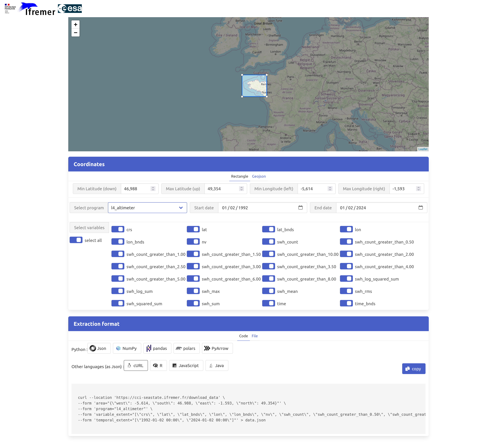
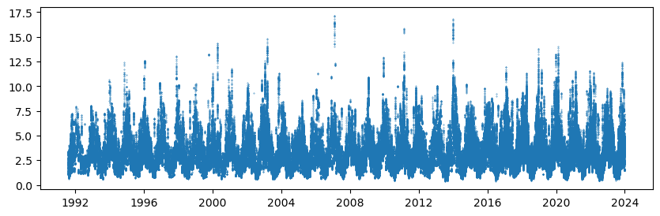
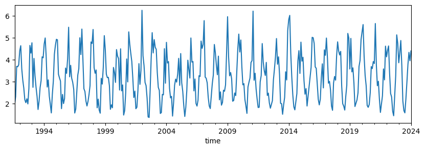

Using the CCI Sea State subsetting interface#
The ESA CCI Sea State project provides a web interface and API to subset the different data time series. User can select their dataset, variables, area and period of interest, and download them in various formats or directly use them from their script.
The URL for this service is: https://cci-seastate.ifremer.fr/
This brings you to the following user interface (see screenshot below). Just select your extraction criteria and download the data or copy/paste the provided code snippet into your script or jupyter notebook.

In the following we will select and read data over the Bay of Biscay (West of France) and import them in thenotebook as a pandas DataFrame. This code snipped is directly copied from the web GUI. Simple as that!
%%time
import requests
import io
import pickle
import json
import pandas as pd
url = "https://cci-seastate.ifremer.fr/download_data"
area = {'west' : -5.614, 'south' : 46.988, 'east' : -4.131 , 'north' : 47.798}
variable_extent = ["bathymetry", "cycle", "distance_to_coast", "lat", "lon", "relative_pass", "satellite", "swh", "swh_adjusted", "swh_denoised", "swh_uncertainty", "time"]
temporal_extent = ["1991-08-03 00:00", "2024-01-02 00:00"]
payload = {
"area" : json.dumps(area),
"temporal_extent" : json.dumps(temporal_extent),
"variable_extent" : json.dumps(variable_extent),
"program" : "l3_altimeter",
"format" : "pandas"
}
response = requests.request("POST", url, data=payload, timeout=600).content
data = pickle.load(io.BytesIO(response))
# data is a pandas.core.frame.DataFrame() object
CPU times: user 1.42 s, sys: 297 ms, total: 1.72 s
Wall time: 39.4 s
We now have in data a pandas DataFrame with all the collected measurements within the area and time period:
print(data)
swh_denoised distance_to_coast swh_adjusted relative_pass cycle \
0 9.622751 752000.0 9.601735 NaN 1
1 9.629886 747000.0 9.746735 NaN 1
2 9.594657 743000.0 9.636736 NaN 1
3 9.464070 738000.0 9.906735 NaN 1
4 9.256510 734000.0 9.811735 NaN 1
... ... ... ... ... ...
490736 2.374578 679000.0 2.583595 NaN 78
490737 2.389965 686000.0 2.893221 NaN 78
490738 2.385899 693000.0 2.159902 NaN 78
490739 2.345958 698000.0 2.069340 NaN 78
490740 2.332614 705000.0 2.273203 NaN 78
time lat bathymetry satellite swh \
0 2002-01-17 23:53:52.751847 46.441813 -2992.0 1 10.0250
1 2002-01-17 23:53:53.771423 46.397790 -3276.0 1 10.1700
2 2002-01-17 23:53:54.791001 46.353747 -3258.0 1 10.0600
3 2002-01-17 23:53:55.810574 46.309686 -3417.0 1 10.3300
4 2002-01-17 23:53:56.830152 46.265605 -3212.0 1 10.2350
... ... ... ... ... ...
490736 2023-04-24 23:31:17.000000 45.825236 -3683.0 10 2.5505
490737 2023-04-24 23:31:18.000000 45.883349 -3612.0 10 2.8755
490738 2023-04-24 23:31:19.000000 45.941459 -3662.0 10 2.1280
490739 2023-04-24 23:31:20.000000 45.999565 -3574.0 10 2.0310
490740 2023-04-24 23:31:21.000000 46.057668 -3511.0 10 2.2380
lon swh_uncertainty
0 -29.971387 0.177066
1 -29.929422 0.176740
2 -29.887532 0.175905
3 -29.845716 0.173920
4 -29.803973 0.171004
... ... ...
490736 -31.667720 0.088337
490737 -31.690197 0.088780
490738 -31.712712 0.088846
490739 -31.735266 0.088206
490740 -31.757858 0.088001
[490741 rows x 12 columns]
We can display all SWH (from swh_denoised variable) data at once, which is pretty noisy:
import matplotlib.pyplot as plt
fig = plt.figure(figsize=(10,3))
plt.scatter(data['time'], data['swh_denoised'], s=0.1)
<matplotlib.collections.PathCollection at 0x7f9d395df010>

Using simple pandas function, we can quickly average the data as monthly means and display the resulting time series:
fig = plt.figure(figsize=(10,3))
data.groupby(pd.Grouper(key='time', axis=0, freq='MS')).swh_denoised.mean().plot()
<Axes: xlabel='time'>
